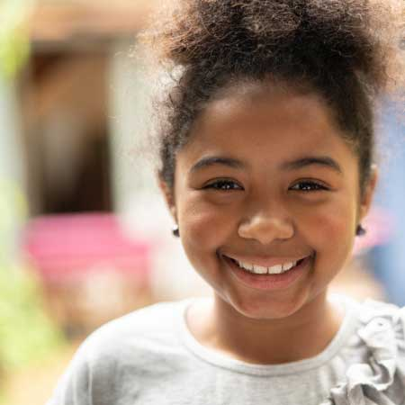
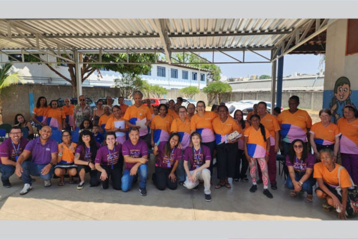

A CX Projetos é uma consultoria especializada em gestão estratégica de projetos sociais, esportivos e culturais, com expertise reconhecida no mapeamento, análise, seleção, compliance e monitoramento de iniciativas via leis de incentivo fiscal.
Analisamos necessidades de proponentes e patrocinadores, auxiliando na destinação de impostos e procedimentos necessários.
Criamos um plano personalizado com proponentes para estratégias de patrocinadores em projetos novos ou recorrentes.
Acompanhamos a execução dos projetos com cuidado e compromisso, supervisionando resultados.
Acompanhamos o progresso, garantindo ajustes necessários durante a execução.
Apresentamos relatórios detalhados sobre impactos e retorno social alcançado.
Alguns projetos que conseguimos viabilizar

Caso não encontre sua dúvida aqui entre em contato conosco agora mesmo
Sim. Nós podemos ajudar a identificar as leis das quais a sua empresa pode se beneficiar e o potencial para uso de impostos. Podemos recomendar projetos do nosso portfólio que se alinhem à estratégia, atributos da marca e pilares de responsabilidade social ou ambiental. Auxiliamos com a habilitação da empresa para patrocinar através de leis que exigem o cadastro como ICMS, ISS e IPTU. Ajudamos áreas Compliance a mitigar riscos no uso dos incentivos fiscais. Podemos também desenvolver projetos sob medida e aprová-los nas leis através da nossa rede de proponentes.
As Leis de Incentivo Fiscal são legislações que permitem que empresas e/ ou pessoas físicas destinem parte do imposto de renda, do ICMS, do ISS ou do IPTU devidos para apoiar projetos aprovados para captar recursos de impostos. Essa iniciativa visa estimular a economia criativa, a responsabilidade social e fomentar ações em diversas áreas.
No caso das leis baseadas no imposto de renda, e focando nas empresas, basta que elas sejam de lucro real, sem necessidade de qualquer tipo de cadastro/ habilitação. As empresas podem destinar a projetos previamente certificados nas respectivas leis de incentivo, sendo um total de 10% do IR pago no ano, sendo 4% do IRPJ para projetos da Lei Rouanet ou 3% para Ancine (estas 2 leis concorrem entre si, então pode usar só uma ou as 2 combinadas, desde que não ultrapasse os tetos para cada lei e 4% do IRPJ para o caso de usar ambas), 2% para Lei do Esporte (ou 1% para Esporte e 1% para Lei da Reciclagem), 1% para Fundo dos Direitos da criança e adolescente, 1% para Fundo dos Direitos do idoso, 1% para Pronon (assistência oncológica) e 1% para Pronas (assistência a pessoa com deficiência).
No caso do ICMS, se o estado tiver a lei implantada, existem 2 tipos: a Lei de Incentivo à Cultura e a Lei de Incentivo ao Esporte. O percentual para destinação varia por estado, mas, na média, as empresas que tenham saldo devedor de ICMS podem destinar até 3% do valor que será pago aos governos estaduais para Cultura e mais até 3% para o Esporte, havendo necessidade de habilitação prévia para o patrocinador. Para ISS e IPTU, há que se verificar quais municípios possuem a lei implementada, mas, na média, as empresas podem destinar até 20% do saldo devedor do ISS para projetos culturais e/ ou até 2 parcelas do IPTU para o caso de pagamento parcelado, também havendo a necessidade de habilitação prévia para o patrocinador.
Qualquer pessoa física ou jurídica (lucro real) que tenha um imposto de renda a pagar pode participar como apoiador, contribuindo com a destinação fiscal. Isso inclui empresas de diferentes portes e indivíduos que desejam investir em causas sociais. No caso do ICMS, ISS e IPTU não há a exigência do lucro real, mas do saldo devedor para o respectivo imposto e vale para pessoas jurídicas apenas.
Cada projeto aprovado em lei de incentivo recebe do órgão competente uma conta bancária específica para o uso de impostos, de modo que estes valores não se misturem com contas particulares e que haja controle sobre todos os pagamentos.
As empresas desempenham um papel fundamental ao apoiar projetos sociais e culturais, contribuindo para geração de renda e empregos, ampliação do acesso a produtos e bens culturais, manutenção de patrimônio cultural, melhoria da qualidade e das perspectivas de vida para populações vulneráveis, garantia dos direitos, educação de qualidade e até acesso ao tratamento em saúde, impactando positivamente a economia e a sociedade em geral. Além disso, essa ação contribui para o propósito corporativo, fortalecendo a imagem e a reputação. A CX Projetos oferece uma plataforma que conecta essas empresas a mais de 2.300 projetos em busca de recursos.
Atuando na captação de recursos de impostos junto a empresas patrocinadoras. Nós também podemos ajudar com a aprovação e prestação de contas para os projetos nas leis de incentivo.
Os projetos que podem ser beneficiados pelas leis abrangem áreas como cultura, esporte, educação, saúde, e assistência social. As iniciativas precisam estar devidamente registradas e aprovadas pelos órgãos competentes. Os projetos podem também ter perfis temáticos como meio ambiente, igualdade e inclusão, alimentação, geração de renda, saúde etc.
Para que um projeto seja aprovado, ele deve atender a critérios como relevância social, viabilidade técnica e financeira, e apresentação de metas claras. O proponente do projeto precisa atender a critérios de elegibilidade com base no escopo do estatuto ou contrato social e comprovada experiência na área de atuação.
Para algumas leis só podem propor projetos instituições sem fins lucrativos e que tenham certificações específicas. As leis de incentivo à cultura permitem que pessoas físicas submetam projetos, mas em outras só pessoas jurídicas. Todos os projetos precisam ser submetidos seguindo os procedimentos para cada lei aos órgãos competentes responsáveis pela análise e aprovação.
As leis sociais, como Fundos da Infância e do Idoso, trabalham no atendimento direto à população vulnerável e na defesa dos direitos destes públicos. No caso do Pronon há aquisição de equipamentos e investimento em pesquisa para tratamentos oncológicos. Em Pronas, atendimento direto pra pessoas com deficiência.
A lei do Esporte desenvolve o mercado esportivo, ajuda nossos atletas com treinamento e competições e também atende crianças e jovens vulneráveis em contraturno escolar. Já a Lei Rouanet, segundo pesquisa da Fundação Getúlio Vargas (FGV), impulsiona a economia criativa brasileira, mas também gera retornos impressionantes para o país. Ao longo de 32 anos, mais de 55 mil projetos culturais receberam investimentos dos patrocinadores, gerando um retorno para a atividade econômica de R$ 1,59 a cada R$ 1 investido. Esse retorno é gerado por meio da dinamização da cadeia produtiva da arte e da cultura, empregando 7,5 milhões de pessoas em mais de 130 mil empresas formais (segundo estudo do Observatório Itaú Cultural).
Cada projeto aprovado tem que prestar contas do uso dos recursos para os órgãos competentes com base nos objetivos geral e específicos, metas quali e quantitativas e na planilha orçamentária detalhada que foi apresentada quando da aprovação do projeto. A não prestação de contas pode gerar penalidades financeiras e o proponente responsável pode ficar impedido de apresentar novos projetos.
Para mais informações sobre as Leis de Incentivo Fiscal você pode consultar as divulgações que os órgãos responsáveis fazem sobre as mesmas e também a CX Projetos. Estamos aqui para apoiar em toda a jornada para o uso de benefícios fiscais.